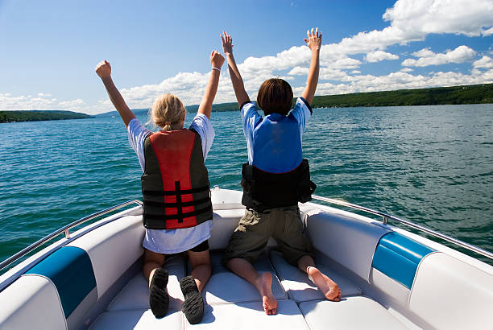

How to Wakeboard
- Adjust your wakeboard to fit your feet size. Strap in tight.
- When in the water...
- Keep the board between you and the boat with your knees bent to your chest.
- Keep your arms straight, have a firm grip on the handle, and make sure your arms stay centered over the board.
- Once you feel the tension in the rope, yell "hit it" for the driver to hit the gas.
- From here twist your hips to have your dominant foot in front while holding the rope as tight as you can.
- You're a pro now! Mess aroud and have fun with it!
How to Wake Surf
- If you are a beginner, find a board with at least two fins, and a thicker build.
- Once in the water...
- Place the board parallel between you and the boat
- While keeping your feet shoulder width apart, center your heels a couple inches from the back of the board.
- Keep you arms bent
- Yell "tension" when in a comfortable position
- From here you turn your hips ninety degrees to get your dominant foot in front.
- Using the rope, pull yourself towards the boat and into the wave
- Shift your feet to where you feel the most balance.
- Once comfortable, let got of the rope and get carving!
How to Tube
- I think this one is pretty self explanatory.
- Hold on and fight for your life!
How to Water Ski
- Start by holding the rope with yours arms extended in front of you.
- Keep the tips of your skis out of the water with your knees bent and close together.
- Hold on as tight as you can when the boat starts to speed up.
- Lean back and side to side to change directions
- Good luck! And WOW you must be buff.
Joy rides
- Sit back and enjoy the ride :)
